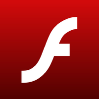
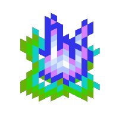

Repositório Flash

Este site é um repositório com 249 jogos em Flash player, mais especificamente aqueles que eu jogava quando era pequeno, ou aqueles que eu passei a gostar depois. Ao longo de vários anos reuní varios desses jogos com a extensão .SWF para a preservação dos mesmos, e evitar que eu perdesse eles quando a Adobe anuncionou o fim do Flash em 2020. Criei este site com o objetivo de preservar os arquivos que eu tenho, além de que eu sempre quis ter um desses sites de joguinhos em Flash para mim :) A maior parte dos jogos que coloquei nesse site vieram do flashpoint.org, outros eu baixei manualmente do codigo fonte das páginas, como o do click jogos ou o site do Uol jogos da época. Entretanto muitos dos .swf eram "url locked", o que quer dizer que esses arquivos só funcionariam em sites específicos, normalmente o site do criador, então tive que caçar esses .swf desbloquados para que eu pudesse concluir o projeto desse site. Por mais que tenha buscado a fundo esses .swf acabei deixando 7 jogos que eu queria por de fora por conta desse motivo.Inspiração pro site

A estrutura desse site foi inspirada em blog de Minecraft para a instalação de um mod, por isso a temática. Preferi manter o estilo e a pegada de 'html simples' para ele, acredito que combinou com a estética de blogs da época em que o flash estava em alta. O site em que eu me inspirei está disponível Aqui. Agradeço ao criador desse site por ter me inspirado, mesmo que sem querer, a fazer esse projeto :D